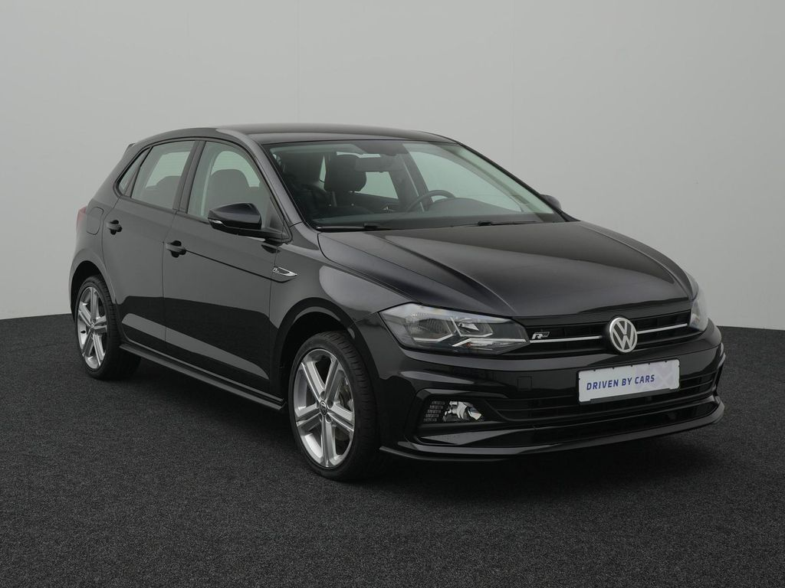
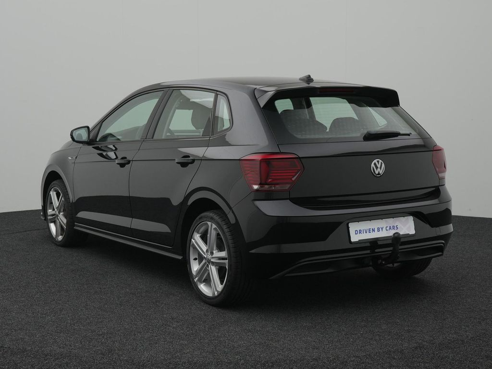
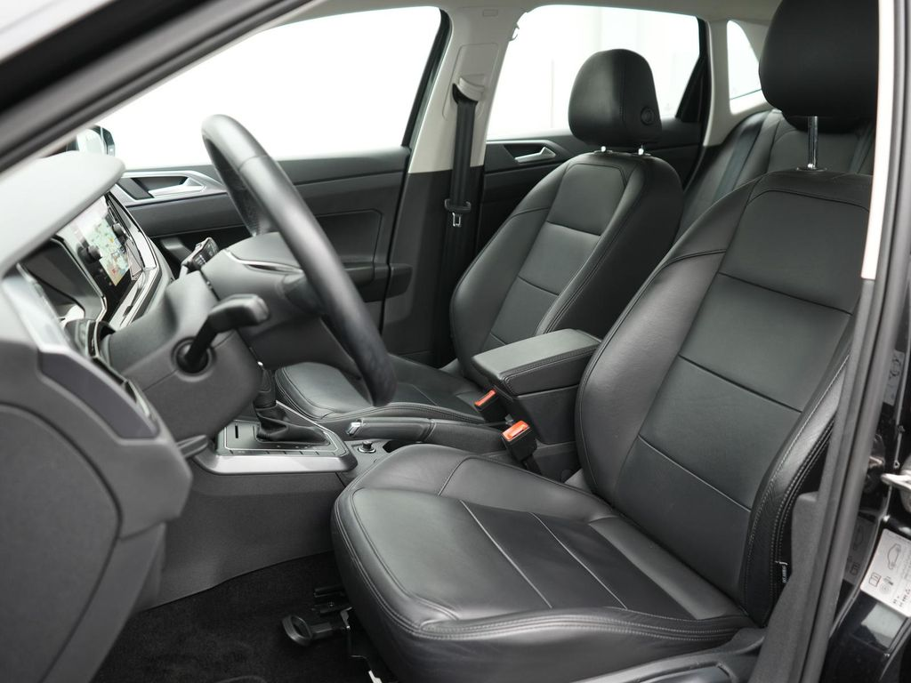
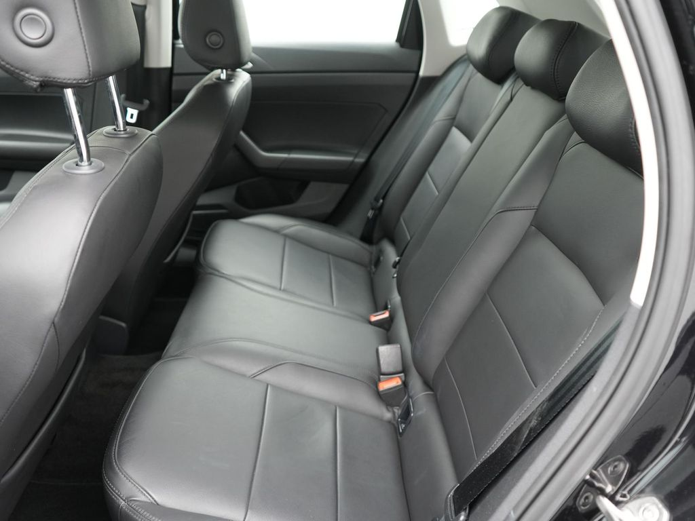
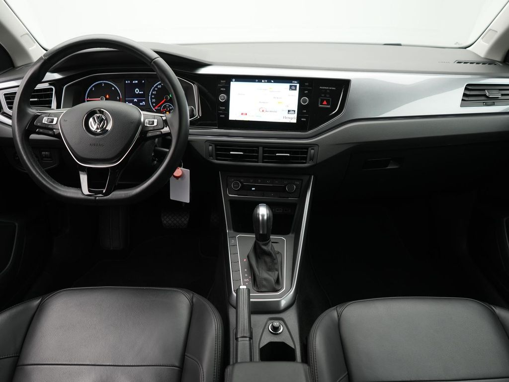
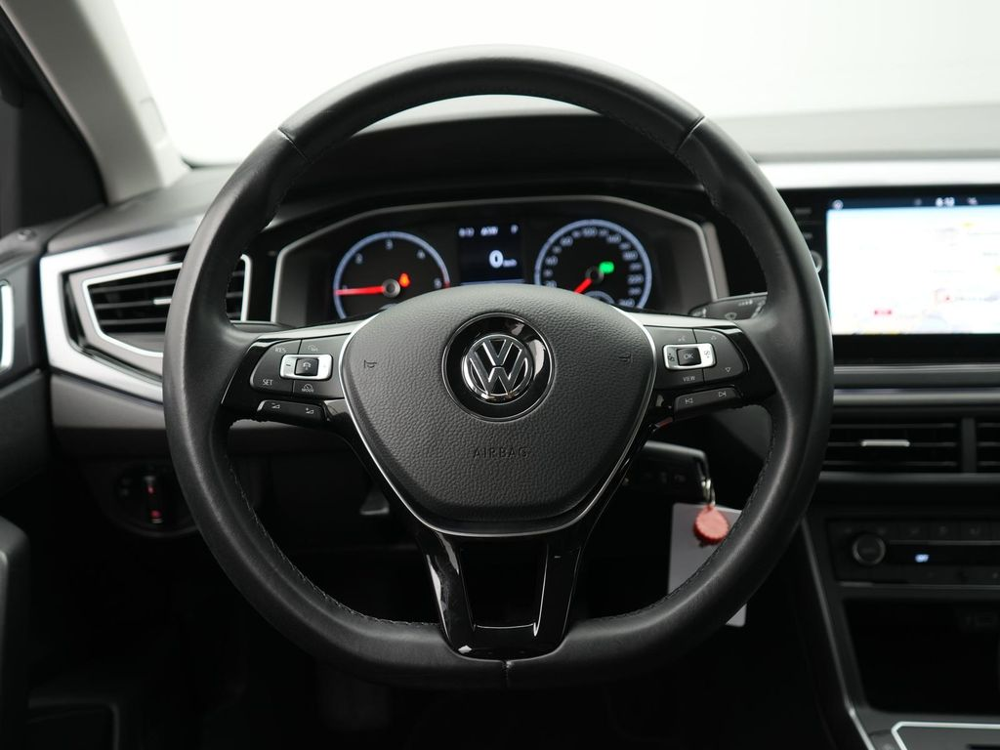
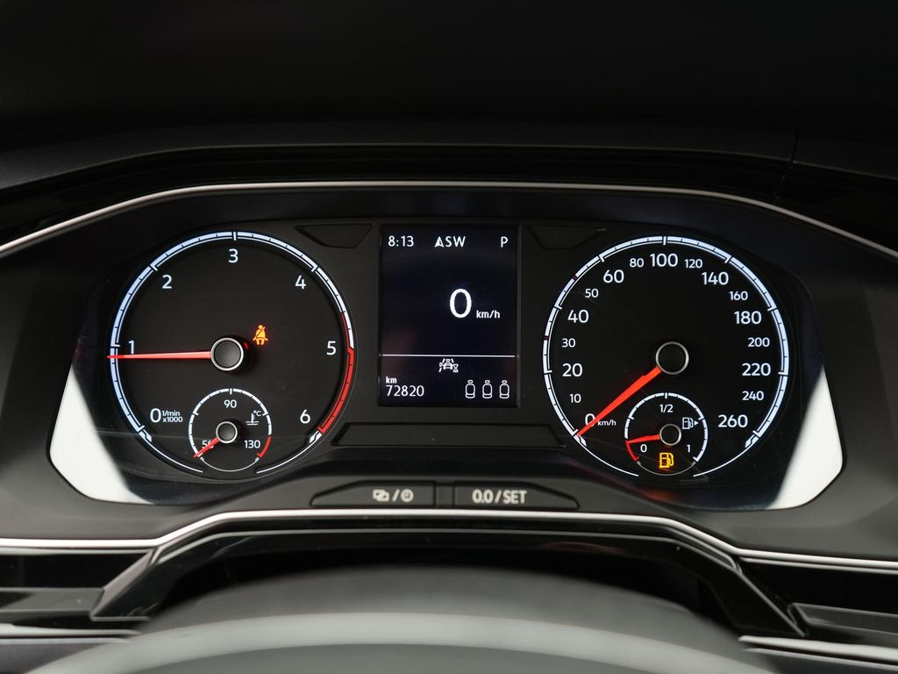

VW Polo








Caracteristici Tehnice:
Motor & Performanță
- Motor: 1.0L TSI, 3 cilindri, 95 CP
- Putere: 95 CP
- Cutie de viteză: Manuală cu 5 trepte
- Tracțiune: Față
- Suspensie: Standard cu arcuri elicoidale
- Autonomie: 850 km (în condiții de drum mixt)
Dimensiuni & Greutate
- Dimensiuni: Lungime 4053 mm, Lățime 1751 mm, Înălțime 1461 mm
- Greutate: 1105 kg
- Număr uși: 5
- Capacitate rezervor: 40L
Consum & Emisii
- Consum mediu: 4.7 L/100km
- Emisii CO2: 107 g/km
Dotări Tehnice
- Sistem de navigație: Composition Media cu ecran tactil 8"
- Primă înmatriculare: 2020
- Vârsta vehiculului: 3 ani
- Kilometraj: 45.000 km
- Culoare: Argintiu Reflex
Confort & Interior
- Răcire și încălzire: Aer condiționat manual
Descriere:
VW Polo este o mașină compactă ideală pentru oraș, care oferă un echilibru perfect între economie și confort. Cu motorul său eficient de 1.0L TSI și consumul redus, acest model este perfect pentru utilizarea zilnică și naveta urbană. Interiorul este bine organizat și oferă spațiu suficient pentru 5 pasageri.
Dotările de siguranță includ ABS, ESP, airbag-uri multiple și sistem de monitorizare a presiunii în pneuri. Sistemul de infotainment modern cu ecran tactil de 8 inch oferă conectivitate pentru smartphone și navigație intuitivă.
Pentru cei care caută o mașină fiabilă, economică și ușor de condus în oraș, VW Polo reprezintă o alegere excelentă. Este perfectă atât pentru șoferii începători, cât și pentru cei experimentați care apreciază eficiența și calitatea germană.